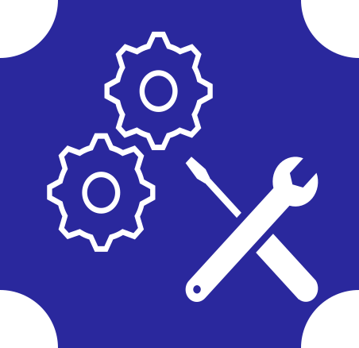
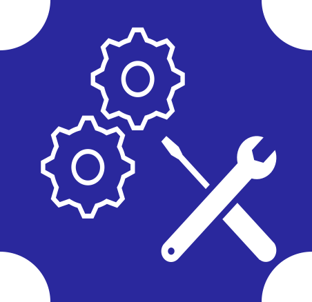

This page explains how to use RZ/V2L AI Applications Demo on the RZ/V2L Evaluation Board Kit.
Supported version: RZ/V2L AI SDK v5.00
Overview
This page explains how to setup the RZ/V2L Evaluation Board Kit (EVK) using the demo binary file.
Unlike the procedure described in Getting Started, this page does not build the AI Software Development Kit (AI SDK) environment, so you can easily try running the AI Applications.
In this guide, you will be able to learn followings.
Prepare microSD card to set up operating environment
Run AI Applications on the board
The goal of this guide is to run the application and display the captured data with AI inference results on an HDMI monitor as shown below.
For more information about the RZ/V series, click here.
Preparation
This chapter describes the procedures up to the first startup of the RZ/V2L Evaluation Board Kit.
Step 1: Hardware Preparation
To start using RZ/V2L AI Applications Demo, we need to get the board.
Renesas provides ideal board kit for RZ/V evaluation.
Since MIPI camera module is included, you can start evaluating RZ/V2L immediately by building an environment.
Click the button below to get the RZ/V2L board.
Please prepare the following equipments for your EVK.
Equipment
Details
RZ/V2L EVK
Evaluation Board Kit for RZ/V2L. Includes followings.
MIPI Camera Module(Google Coral Camera)
Note that the CMOS sensor (OV5645) in the camera is no longer available, and should not be used for mass production.
Any software support provided is for evaluation purposes only.
MicroUSB to Serial Cable for serial communication.
AC Adapter
USB Power Delivery adapter for the board power supply.
MicroHDMI Cable
Used to connect the HDMI Monitor and the board.
RZ/V2L EVK has microHDMI port.
USB Camera
Optional. AI Applications support USB camera input.
Supported resolution: 640x480
Supported format: 'YUYV' (YUYV 4:2:2)
USB Cable Type-C
Connect AC adapter and the board.
HDMI Monitor
Used to display the graphics of the board.
Supported resolution: 1280x720
microSD card
Must have over 8GB capacity of blank space.
Operating Environment: Transcend UHS-I microSD 300S 16GB
Linux PC
Used for Setup microSD card.
Operating Environment: Ubuntu 20.04
SD card reader
Used for setting up microSD card.
USB Hub
Optional. For using USB Camera.
Used to connect USB Camera and USB Mouse to the board.
USB Mouse
Used to operate the mouse on the screen of board.
Note 1
From v5.00, USB Keyboard is no longer required since GUI operation is supported.
Note 2
Some applications support audio output in addition to the visual presentation on HDMI monitor.
If you would like to have the audio output, please prepare the HDMI monitor with speaker.
Step 2: Demo file extraction to microSD card
If you have not yet obtained the demo file, click on the link below to download it.
Note
In this section, we use a Linux PC to prepare the microSD card.
If you want to use a Windows PC, we have experience in writing disk images by following steps.
Extract the *.wic.gz compressed file using software such as 7-Zip.
Write the extracted disk image file to the microSD card using the applications such as:
List of Linux license information included in Demo microSD card image. Copyright information is not included. Please refer to Open Source Software packages included in AI SDK v5.00 Source Code to see copyright information.
sd_image/
rzv2l_ai_applications_demo_v5.00.wic.gz
Gzip file containing the Demo microSD card image.
rzv2l_ai_applications_demo_v5.00.wic.bmap
Bmap file for copying the Demo microSD card image.
r11an0762ej0500-rzv2l.pdf
ReadMe document describing the contents of the Demo zip file.
To write the microSD card image, install bmap-tools on the Linux PC with the following command.
sudo apt install bmap-tools
Run the following command to check the device connected to the Linux PC before inserting the microSD card.
lsblk
Then, insert the microSD card into the Linux PC and run the same command (lsblk) again.
Confirm that the microSD device name (/dev/sdb) has been added to the terminal after inserting the card, as shown in the console window below.
Note
The microSD card device name may vary depending on the PC environment. In this manual, we use /dev/sdb as the microSD card device name.
To use bmap-tools, microSD card partitions must be unmounted. Follow the steps below to unmount.
Run the following command to check the automatically mounted microSD card partitions.
df-h
Check the output and find the mount point from the device name found above (/dev/sdb).
Here "/media/user/9016-4EF8" is the mount point.
Filesystem Size Used Avail Use% Mounted on
:
snip
:
/dev/sdb1 15G 32K 15G 1% /media/user/9016-4EF8
Warning
Here, we use /dev/sdb as microSD card device name.
Unmount the SD card partition if it is mounted.
sudo umount /media/user/9016-4EF8
Note
If there are more than one partitions on microSD card, unmount all partitions.
Using the device name (/dev/sdb), write the disk image file into the microSD card.
cd sd_image
sudo bmaptool copy --bmap rzv2l_ai_applications_demo_v5.00.wic.bmap rzv2l_ai_applications_demo_v5.00.wic.gz /dev/sdb
Warning
Change /dev/sdb to your microSD card device name.
Note
Writing the microSD card image takes several minutes.
Execute the following command to eject the microSD card.
sudo eject /dev/sdb
Warning
Change /dev/sdb to your microSD card device name.
This completes the board setup. Lets move on to the next chapter and run the applications.
Running Applications
This chapter describes how to run the AI Applications in the demo file.
Step 1: Boot process
Once the Preparation chapter is complete, you can boot the board in the following way.
Insert the microSD card to the Board.
Note
Use the microSD card slot CN3 as shown in the figure.
Change SW1 and SW11 setting as shown in the figure.
Connect the USB mouse.
Note
If you would like to use USB camera, connect the USB mouse and USB camera via USB hub.
Connect the Google Coral camera to the Board.
Connect the HDMI monitor to the Board.
Connect the power cable to the Board.
Press power button for 1 second to turn on the board.
The GUI home screen appears on the HDMI monitor.
See the figure below for window layout.
GUI Home Screen
Step 2: Demo execution
The list of AI applications included in the Demo is shown below.
Select the application you want to run from the list.
Note 2
The termination button on application window may temporarily disappear.
Please wait a few seconds until the screen display gets stable.
Note 3
If the running application encounters any errors (e.g. the camera is not connected), the application will automatically exit and return to the home screen.
Note 4
Applications with Audio Output provide the sound alert from HDMI monitor speaker in addition to the visual presentation.
E.g. Preceding Vehicle Movement Alert.
To terminate the application, follow the instruction below.
For CUI application, press the blue Termination Button in the bottom right-hand corner.
For GUI application, double click the application window.
Step 3: Shutdown process
To power-off the RZ/V2L EVK, follow the procedures below.
On the home screen, click the X button at the top right-hand corner.
On the screen, check that shutdown procedure runs and ends with following log.
 



{kind=link}

{kind=link}

{kind=link}